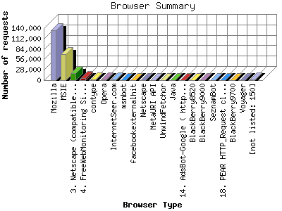

The Browser Summary identifies the most popular web browsers used to visit
this site.
Browsers are broken down by recognized categories such as
Netscape Navigator/Communicator, Microsoft Internet Explorer, WebTV, Opera
and the like. Within each category is also a subgroup by version number
such as 'MSIE 5.0' or 'Netscape 4.5'.
This report shows the first 20 results by number of requests. This report is sorted by number of requests.

| Browser Type | Number of requests | |
|---|---|---|
| 1. | Mozilla | 134,977 |
| 2. | MSIE | 69,591 |
| 3. | Netscape (compatible) | 19,597 |
| 4. | FreeWebMonitoring SiteChecker | 6,608 |
| 5. | contype | 1,985 |
| 6. | Opera | 1,650 |
| 7. | InternetSeer.com | 1,538 |
| 8. | msnbot | 798 |
| 9. | facebookexternalhit | 513 |
| 10. | Netscape | 320 |
| 11. | MetaURI API | 230 |
| 12. | UnwindFetchor | 229 |
| 13. | Java | 215 |
| 14. | AdsBot-Google ( http: | 144 |
| 15. | BlackBerry8520 | 131 |
| 16. | BlackBerry9000 | 119 |
| 17. | SeznamBot | 110 |
| 18. | PEAR HTTP_Request class ( http: | 99 |
| 19. | BlackBerry9700 | 99 |
| 20. | Voyager | 97 |
| [not listed: 150] | 1,921 | |
This report was generated on July 20, 2013 18:53.
Report time frame May 30, 2012 16:23 to July 20, 2013 23:58.
| Web statistics report produced by: analog 5.1 / Report Magic 2.21 |